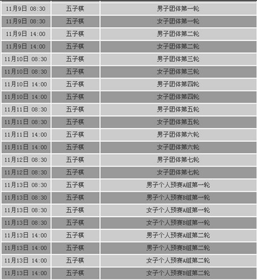
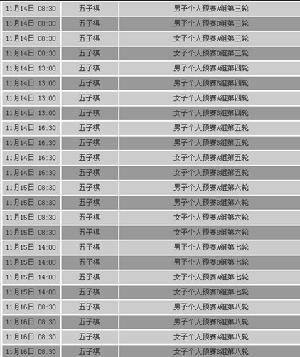
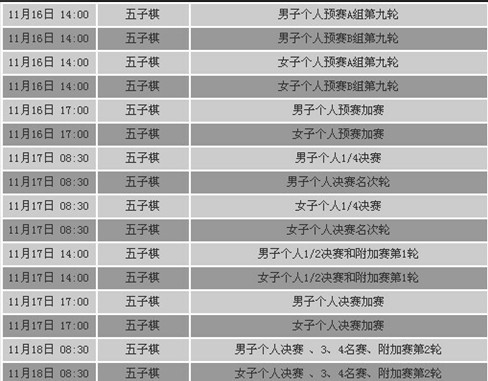

原文由 寒夜潇潇 发表于 2011-11-16 14:48:15 :
坚持就是胜利

［ 黑白之巅 于 2011-11-16 15:02:01 时花20金币送鲜花一朵］
［ 黑白之巅 于 2011-11-16 15:02:03 时花20金币送鲜花一朵］
［ 黑白之巅 于 2011-11-16 15:02:05 时花20金币送鲜花一朵］



［此帖子已被 黑白之巅 在 2011-11-16 14:48:09 编辑过］
［ 寒夜潇潇 于 2011-11-16 14:48:34 时花20金币送鲜花一朵］
［ 寒夜潇潇 于 2011-11-16 14:48:46 时花20金币送鲜花一朵］
［ 寒夜潇潇 于 2011-11-16 14:49:09 时花20金币送鲜花一朵］
［ 掌棋如烟 于 2011-11-17 15:51:58 时花20金币送鲜花一朵］
［ 掌棋如烟 于 2011-11-17 15:52:00 时花20金币送鲜花一朵］
［ 黑白之巅 于 2011-11-16 15:02:01 时花20金币送鲜花一朵］
［ 黑白之巅 于 2011-11-16 15:02:03 时花20金币送鲜花一朵］
［ 黑白之巅 于 2011-11-16 15:02:05 时花20金币送鲜花一朵］
引用：
原文由 寒夜潇潇 发表于 2011-11-16 14:48:15 :
坚持就是胜利［ 黑白之巅 于 2011-11-16 15:02:01 时花20金币送鲜花一朵］
［ 黑白之巅 于 2011-11-16 15:02:03 时花20金币送鲜花一朵］
［ 黑白之巅 于 2011-11-16 15:02:05 时花20金币送鲜花一朵］
看着他们在赛场拼搏，一分一分来争取，还是蛮心疼滴。。。
赛场就是活生生的历练，痛苦的成长。。。从赛场出来就像炼狱归来一般。。。。。